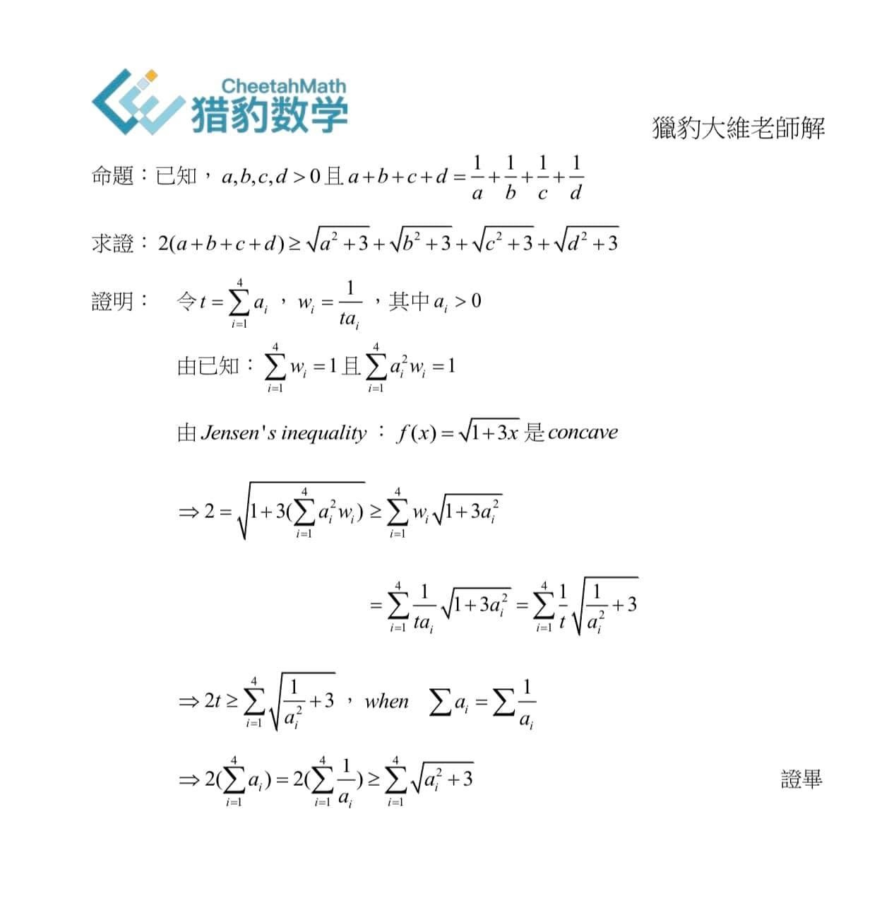
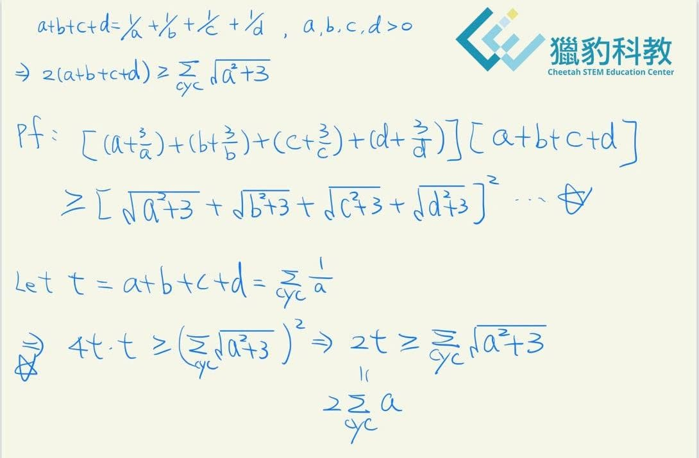

奧數疑雲
常有爸爸媽媽告訴我，坊間很多「奧數」競賽，也看過有其他地方號稱得到數百個獎牌，這些和我們說的奧數有一樣嗎？
我和獵豹老師們，不做浮誇吹噓，也不會傳達錯誤訊息給爸爸媽媽們。許多大家在其他地方看到的，甚至故意使用奧數名稱配上奧數圖示，都與正宗官方的IMO（奧數）沒有半毛錢關係。
真正的奧數（IMO)從報名到各種營隊、培訓，到最後成為國手出國比賽，全部免費，得獎回國不僅有各種保送升學優待（金牌保送台大電機 申請世界級頂大沒問題！）還有高額奬學金(金牌20萬）！
我和獵豹老師不主動鼓勵孩子們去參加這種層級的競賽，這只適合極少數人參與。
APMO（亞太數奧）每年國手10人。
IMO（奧數）每年國手6人。超過一百國參賽！
我們推薦孩子們參與AMC輕競賽，這是只要對數學有興趣的孩子，人人可參與，獵豹的輕競賽課程（例如1001/8000/8001），以及正規課程中的補充題和專題課，例如國七J71A和即將推出的高一S101。參與正規課，一起學好「課綱」和「輕競賽」。
正規課帶給孩子，從課綱基礎處開始，扎實一步步的加深加廣，引領孩子思考，對各種階段升學考試有極大幫助。
看來樸實卻深刻，以為嚴格卻溫暖，理想似遠卻真切。
感謝宗翰老師代領獵豹團隊，讓老師們過去最珍貴的教學經驗，不只帶給孩子們最好的數學引導，更帶領我們FB社團，成為一片最清新、最多熱愛數學的孩子們可以安心待著的學習園地！
後記：如果大家對APMO,USAMO,羅馬尼亞大師賽IMO,Putnam這類頂級賽事有興趣。宗翰老師以後會寫文介紹它們的沿革、屬性、題目。
或許家長與同學們 對IMO的難度感到好奇，我下面放一個前陣子其他補教老師請教獵豹團隊的一道IMO預選題，這題的難度據宗翰老師說，在IMO屬於中高級。
這題的示範解法是由獵豹的大維博士提供，宗翰老師評論：大維這解法顯然出自專業數學家的手筆！
獵豹的青昀博士 再來個初等解法
https://www.facebook.com/groups/695697124716309/permalink/793276181625069/

